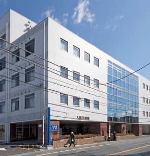
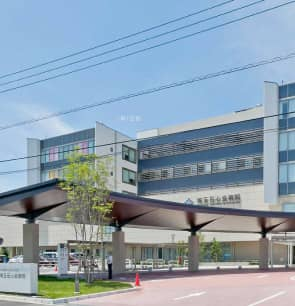
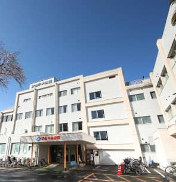
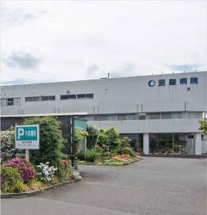

Bring up
安心して子育てできる充実の市制
共働き世帯にもやさしい街！
狭山市では、家庭の経済的な支援から預かり施設、コミュニティ施設まで、子育てに関することを幅広くサポートする市制があります。
特にさやまファミリーサポートセンターでは、保育園・幼稚園・学校への送り迎えも対応。緊急・夜間病院も充実しており、子育て世帯にやさしい地域です。
充実した子育て市制
■経済的支援
こども医療費支給制度
狭山市在住で、医療保険に加入している中学3年生（修了前）のお子様を対象に通院や入院の際にかかる費用を負担。
■医療保険の規定により、医療機関の窓口で支払う金額
■母子保健法による養育医療や障害者自立支援法による育成医療など、他の法令にもとづき負担した自己負担額
■入院した際の食事代（ただし、標準負担額をいう。）
※条件あり。制度の利用には申請が必要です。詳しくは狭山市ホームページをご確認ください。
児童手当
狭山市に住民登録があり、中学校（修了前）の児童を養育している生計中心である方（原則、所得の高い父または母）に児童手当を支給しています。
■0歳～3歳未満／月額15,000円（一律）
■3歳～小学校修了前／第1子・第2子…月額10,000円、第3子以降…月額15,000円
■中学生／月額10,000円（一律）
※条件あり。制度の利用には申請が必要です。詳しくは狭山市ホームページをご確認ください。
3キュー子育てチケット
埼玉県では多子世帯の子育てを応援するため、第3子以降の子どもが生まれた世帯を対象に様々な子育てサービスが利用できるチケットを配布します。
■チケット／5万円分
※申請期限あり。対象サービスや利用方法につきましては、狭山市ホームページをご確認下さい。
■子育て仲間をつくるコミュニティ
親子で遊ぶ・子育ての仲間づくり・子育て情報の収集・相談等、好きな時間に気軽に利用することができる施設です。
総合子育て支援センター「ちゃっぽ」
- 所在地
- 狭山市入間川1-3-1（狭山市市民交流センター内2F）
「狭山市」駅西口から徒歩2分
- 対象
- 0歳～就学前のお子様と保護者
開館日／原則として年末年始を除く毎日
開館時間／9時～18時まで
駐車場／なし
子育てプレイス（市内５カ所）
- 対象
- 0歳～3歳のお子様と保護者
-
子育てプレイス新狭山
所在地／新狭山2-6-45横山ハイツ1階
開館時間／10時～16時
休館日／㈬・㈰・祝日・年末年始
駐車場／なし -
子育てプレイス稲荷山
所在地／入間川4-14-7（中央児童館）
開館時間／9時30分～16時30分
休館日／㈯・毎月第3㈫・年末年始
駐車場／あり -
子育てプレイス奥富
所在地／下奥富1100（奥富ふれあい館）
開館時間／10時～16時30分
休館日／㈫・㈯・祝日・年末年始
駐車場／あり -
子育てプレイス広瀬
所在地／広瀬2-2-17（広瀬児童館内）
開館時間／9時30分～16時30分
休館日／㈰・毎月第3㈭・年末年始
駐車場／あり -
子育てプレイス水野
所在地／水野891-4（水野児童館2階）
開館時間／9時30分～16時30分
休館日／㈰・毎月第1㈪・年末年始
駐車場／あり
■共働き世帯の子育てをサポートする施設
お父さん、お母さんが安心してお子様を預けられるよう、様々なスタイルの一時預かり保育事業があります。
一時預かり・休日保育
市内の認可保育園
内容／保護者の短時間の就労・疾病等により、一時的に家庭での保育が困難な場合の一時預かり
対象／市内に住民登録があり、認可保育所等に在籍していない就学前のお子様
利用日／(月)～(金) 祝日、年末年始を除く
実施園／広瀬保育所・こひつじ保育園・こひつじ保育園水富・
みつばさ愛育園・青柳保育園・堀兼みつばさ保育園・
小山台保育園・けやの森保育園・あきくさ保育園・
狭山台みつばさ保育園・風の森みどり保育園・
風の子保育園・むさしの森保育園・いるまこども園・
未来ふじみ認定こども園 上記15施設
●ご利用料金
各園で異なります。実施施設へ直接お問い合わせください
ちゃっぽ保育室
内容／保護者の通院や習い事、リフレッシュ等の一時預かり
対象／満1歳～就学前のお子様
定員／10名
保育時間／8時～20時（最大８時間まで） 年末年始を除く
●ご利用料金
1時間 300円
休日保育
内容／保護者が休日に就労等で保育できない場合
対象／満1歳～就学前の認可保育所等に在籍しているお子様
利用日／(日)・祝日 年末年始を除く
実施園／祇園保育所（7時30分～18時30分）、狭山台みつばさ保育園（8時～18時）
さやまファミリーサポートセンター
子育ての手助けが必要な方（預ける方）と子育ての手助けができる方（預かる方）が会員になり、
地域の中で子育ての助け合いを行うものです。
預かり・送迎
内容／保育所や幼稚園・学校等への送りや、お迎え
対象／狭山市内に在住・在勤する生後4ヵ月～小学校6年生まで
時間／7時～22時で希望する時間
●ご利用料金
1時間以内 700円（一時間経過後は30分毎に350円）
病児・病後児預かり
内容／受診済みで、在宅での保育が可能な場合に預かります
対象／狭山市内に在住する1歳～小学校6年生まで
日時／(月)～(金) 祝日、年末年始を除く 7時～19時
●ご利用料金
1時間以内 1000円（一時間経過後は30分毎に500円）
欲しかったのは、子どもたちがのびのびと楽しめる空間。
スキップフロアのある家。
埼玉県／K様邸
引っ越し前はアパート暮らしをしていたK様。「音」の問題や、資産にならない家賃の支払いに疑問を持ち、注文住宅を探し始めたと仰います。
「子どもが巣立つのはきっと早いと思います。想い出をたくさんつくるためにも、子どもたちが思い切り楽しめる空間をつくってあげたかった」と仰るご主人様。そんな時、奥様が偶然通りかかった所沢市のとある場所でリリースしていた住協グループの建築条件付土地※に出会ったといいます。
…続きは弊社パンフレットをご覧ください！
※建築条件付土地…指定された建築会社にて自由設計で建築するための土地。住協の場合はグループ会社である住協建設が指定建築会社となります
住協で家を建てたお客様にインタビュー！
敷地面積や、ご予算、こだわったこと。
家を建てるため、絶対に実現したかったこととは？
休日・夜間の医療機関
狭山市急患センター
対応日／(日)・祝日昼間の初期救急診療
所在地／狭山市狭山台3-24 （保健センター隣）
診療科目／内科、外科、小児科、歯科
狭山市急患センター※相互利用出来ます
対応日／(火)・(水)・(金) 19時30分～22時30分
所在地／狭山市狭山台3-24 （保健センター隣）
入間市夜間診療所
対応日／(日)・(月)・(木)・(土) 19時30分～22時30分
所在地／入間市上藤沢730-1 （健康福祉センター内）
救急指定病院
- 
入間川病院狭山市祇園17-2
- 
埼玉石心会病院狭山市入間川2-37-20
- 
狭山中央病院狭山市富士見2-19-35
- 
至聖病院狭山市下奥富1221
Interview
■狭山市内で活躍する方々にインタビュー！